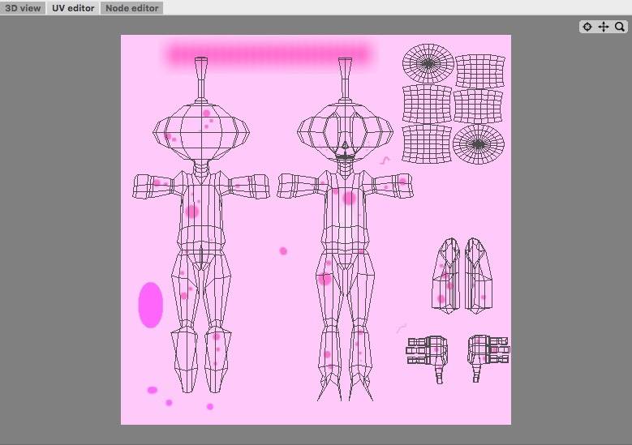

Paint Tool
The paint tool offers basic texture painting tools like different brushes, rubber, circle, rect, etc. It can be used to paint from color textures to displacement textures while every stroke will be updated in the 3D view and the UV editor view in real time. So you can immediately see the results on your model in 3D and you don't have to switch between external painting apps and your 3D modeler. But if you want you can still use your external image processor if you want to achieve some special effects which aren't available in the Paint tool.
To draw into a texture you first have to select a drawing target. To pick a drawing target chose any of the texture properties available throughout Cheetah3D.
On the left side of a texture property you will find four buttons. If you've already loaded a texture you can click on the "Edit" button immediately. If not you first have to load a texture or create a new one with the "Create" button. After clicking the "Edit" button the texture will show up in the UV editor and your are ready to paint.

When you are done with painting press the "Leave Edit" button to save the texture.
Attention:
- You can only paint to image textures. Movie textures aren't supported yet.
- File formats with loss less compression like .tiff and .png are highly recommended. So the quality of the texture won't decrease with every texture save.
Modes
The paint tool works in all modes.


To use the paint tool, you first have to define a texture to which you want to draw (see above). After having a valid texture you can select the paint tool from the context menu of the UV editor or at "Tools->UV->Paint". Select the tool you want to use (brush, rubber, etc.) and set the tool properties. Now you can use the tool by painting with the mouse into the UV editor.
Keys
- none
Properties
- Type: Click on the buttons to select the tool you want to use
- Shape: The shape of the brush.
- Size: The maximum size in pixels of the brush.
- Spacing: The ratio between the brush drawings.
- Color: The color of the brush. This property doesn't have any effect if you use a brush texture..
- Background: The background color. This property is especially important if you use the rubber.
- Brush texture: Sets the texture of the brush..
- Scale: Sets the scaling factor of the brush texture.
- Rotation: Sets the rotation of the brush texture.
- Pressure sensitive size: The size of the brush depends on the pen pressure if you use a tablet.
- Pressure sensitive alpha: The opacity of the brush depends on the pen pressure if you use a tablet.
- Live update: If this property is enabled relief and displacement textures are updated in realtime in the 3D view. Since that could be a quite expensive operation it could be sometimes convenient to disable the live update.
- Preserve alpha: The brush won't be composited over the texture but the alpha values of the brush will be written into the alpha channel of the texture. This can be very helpful to paint hair strains.